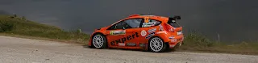
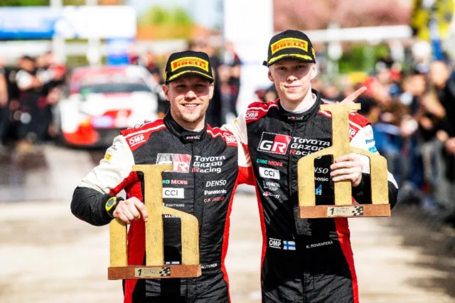
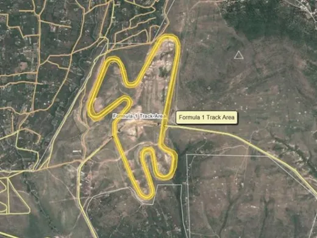
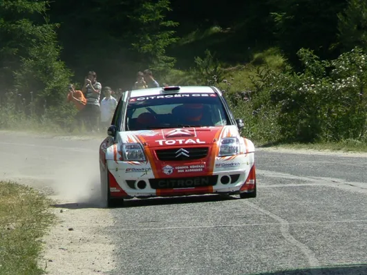
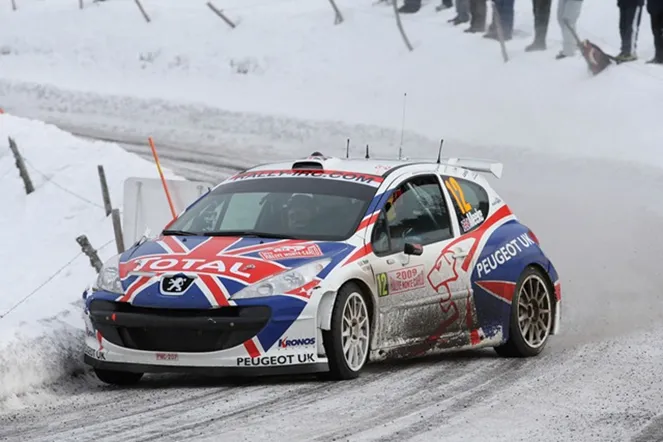
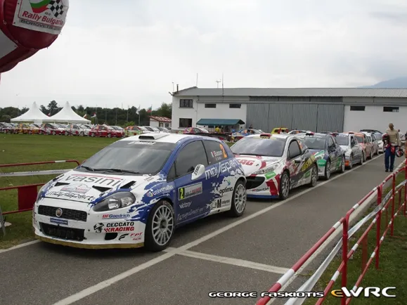
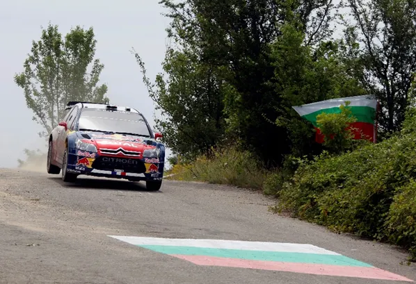
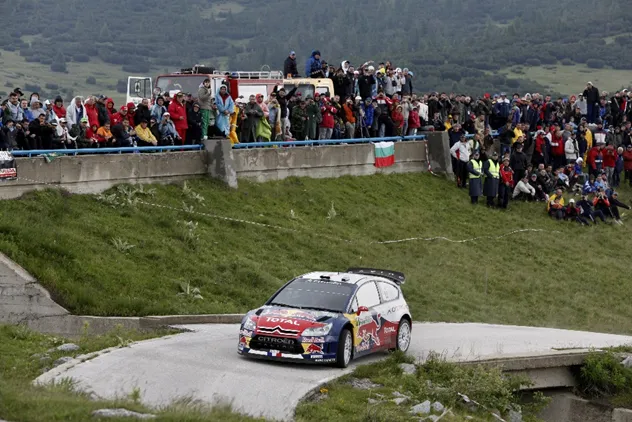
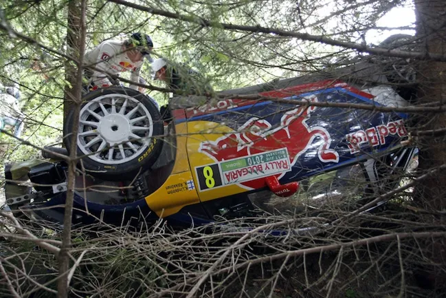
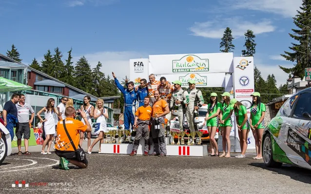

Rally Bulgaria: The Forgotten Tarmac Rally
Rally Croatia may have only hosted 2 WRC rallies, but it has soon become a fan favorite, as both of the 2021 and 2022 editions are considered modern classics with the rally win being decided in the power stage on each occasion.

Kalle Rovanpera and Jonne Halttunen celebrate their 2022 Rally Croatia win after beating Ott Tanak in the power stage
With the first full tarmac round of the 2023 World Rally Championship looming in the horizon (ok let’s be honest 2nd, Monte was really dry), we decided to give you a retrospective to the other, rather forgotten tarmac WRC Rally that was held in the Balkan Peninsula, Rally Bulgaria.
Our story begins in 2008, when a bulgarian party inquired about the possibility of a Bulgarian Grand Prix with F1 boss Bernie Ecclestone. The 2 sides also met in Germany after the 2009 German Grand Prix in Nurburgring to discuss a potential 10 year deal (!) with the circuit rumored to be built in the town of Pleven.

The layout of the unbuilt circuit
These talks didn’t amass to anything though, and the Bulgarians quickly turned to a cheaper and more feasible solution, Rallying. Rally Bulgaria had been part of the European Rally Championship since 1972 and was considered an important part of the championship, being given a higher coefficient (point multiplier) back when the ERC had wayyyyy too many rallies.

Simon Jean Joseph on his way to a 2nd place finish on the 2007 edition of the rally
So the rally organisers met up with the promoter and set up the 2009 version of the rally to also be a candidate event for the 2010 WRC calendar. Back then the WRC was in a bit of a pickle, as it was hit hard by the economic crisis. Subaru and Suzuki left, leaving the sport with only 2 manufacturers, Citroen and Ford. The calendar was also impacted, with the 2009 calendar featuring 12 rounds, 3 less than 2008, with the FIA imposing a round rotation system so that more countries could host rallies. That meant that rallies like Monte Carlo, Sweden, Corsica, Germany, New Zealand didn’t feature on that year’s calendar. What it was essentially, was that if you had money for a candidate event, you were likely to get a place in the WRC calendar.

Rally Monte Carlo was part of the IRC in its 3 year absence due to the rotation system
Back to Bulgaria and it’s candidate rally now. The rally was the 5th round of the ERC calendar and was won by Giandomenico Basso in a Fiat Abarth Punto S2000. But the rally was marked by the death of Italian co-driver Flavio Guglielmini who sadly passed away when the Peugeot 207 S2000 he was co-piloting crashed heavily on Stage 7 of the rally.

Picture of the 2009 Service Area
Somehow, Rally Bulgaria was still featured on the 2010 WRC Calendar ahead of the likes of Acropolis, Argentina and Sardegna, who were all rumored candidates after the fatality in the candidate event. WRC Commission head Morrie Chandler, deciding that Rally Bulgaria had met the required standard for a WRC Rally with its candidate event.

Sebastien Loeb on course to win the 2010 event
The 2010 event was held in the ski resort of Borovets, near the capital, Sofia featuring roads that were according to some reminiscent of Rally Catalunya or Barum Rally Zlin. In my opinion it’s similar roads to Croatia, only wider, with more flow and without crests.
The rally was a walk in the park for Sebastien Loeb and Citroen as the French manufacturer recorded an astonishing 1-2-3-4 with Sebastien Loeb leading Dani Sordo, Petter Solberg and Sebastien Ogier, it was only the second 1-2-3-4 ever in WRC’s history after Toyota locked out the four places in Safari 1993.

Sebastien Loeb had a 51 point lead after Bulgaria
As for the rest, Kimi Raikkonen crashed out from 4th on the 4th stage of the rally. All the Ford drivers struggled, with Mikko Hirvonen finishing 3 minutes behind Loeb, and teammate Jari Matti Latvala closer to Hungarian privateer Frigyes Turan in an old Peugeot 307, than the winner. In JWRC, Thierry Neuville won the rally in a C2 S1600 and finished 12th overall, beating future WRC privateer Dennis Kuipers who drove a Fiesta S2000.

The aftermath of Kimi Raikkonen’s off link to the video here
After the finish of the rally, it was evident that Bulgaria wouldn’t host another WRC event with M-Sport boss Malcolm Wilson saying: “From the stages point of view there’s no complaints from that side or the sporting side but I really find it difficult to think this is the right place to have a world championship event.”
The rally failed to attract a lot of fans and the roads felt average at best, especially compared to the rallies it was chosen over. The rally was dropped for the 2011 calendar and hasn’t featured since, returning to the ERC, until 2012 when it was dropped from that too.

Local driver Dimitar Iliev was the last winner of Rally Bulgaria in the ERC
Nowadays, Rally Bulgaria has made a return, being added to the 2023 European Rally Trophy Calendar (if you want to know more about the ERT click this link)
Luckily Rally Croatia has more drama on the stages rather than outside of it and I am sure that all of you, like me, are looking forward to it !


Comments